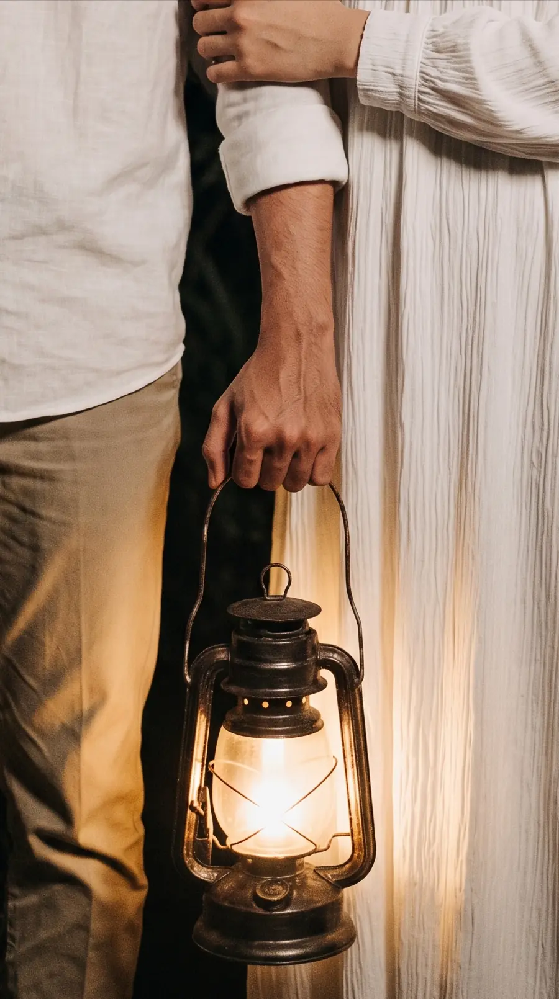

10.10.2026
Kepada Yth
Nama Tamu Undangan
ketuk lentera untuk membuka undangan
Dengan menyebut nama Allah
yang Maha Pengasih & Maha Penyayang,
Ya Allah perkenankanlah kami melaksanakan
pernikahan kami
10.10.2026
Gedung Serbaguna Isvara
Dan di antara tanda-tanda (kebesaran)-Nya ialah
Dia menciptakan pasangan-pasangan untukmu dari
jenismu sendiri agar kamu merasa tenteram
kepadanya, dan Dia menjadikan di antaramu
rasa cinta dan kasih sayang. Sungguh pada yang
demikian itu benar-benar terdapat tanda-tanda
(kebesaran Allah) bagi kaum yang berpikir.
AKAD NIKAH
09.00 WIB
LIVE STREAMINGRESEPSI
10.00 -
12.00 WIB
Bertempat di
Gedung Serbaguna Isvara
Isvara Riverside, Tlogoadi, Mlati, Sleman
Jadilah yang pertama mengirim doa

Apabila Bapak/Ibu/Saudara/i berhalangan
hadir, namun tetap ingin memberikan
tanda kasih, kami senantiasa menerima
dengan penuh rasa syukur.
Kehadiran dan doa restu
dari Bapak/Ibu/Saudara/i
merupakan suatu kehormatan
& kebahagiaan bagi kami
undangan digital oleh
neoma.my.id